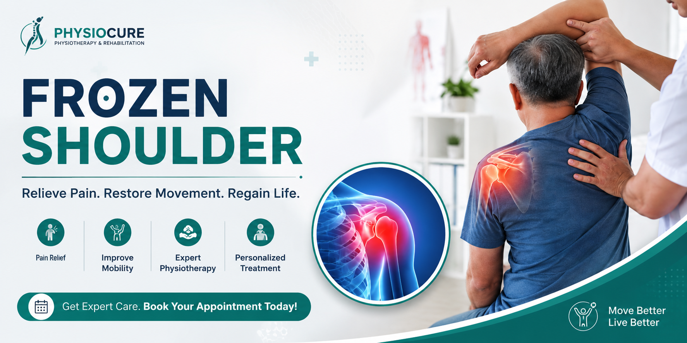

Frozen Shoulder (Adhesive Capsulitis)
Frozen Shoulder is a painful condition that causes stiffness and reduced movement in the shoulder joint. Everyday activities like combing hair, reaching overhead, wearing clothes, or lifting objects become difficult. Early physiotherapy can significantly reduce pain and restore shoulder mobility without surgery.

What is Frozen Shoulder?
Frozen Shoulder, medically known as Adhesive Capsulitis, occurs when the capsule surrounding the shoulder joint becomes inflamed and thickened. This causes pain and severe restriction of movement.
The condition usually develops slowly and progresses through different stages over several months.
Common Symptoms
- Persistent shoulder pain
- Pain that worsens at night
- Difficulty lifting the arm
- Pain while dressing
- Unable to reach overhead
- Difficulty combing hair
- Shoulder stiffness
- Reduced range of motion
Causes of Frozen Shoulder
Several factors increase the risk of developing Frozen Shoulder:
- Diabetes
- Shoulder injury
- Fractures
- Shoulder surgery
- Prolonged immobilization
- Stroke
- Thyroid disorders
- Age above 40 years
Stages of Frozen Shoulder
Stage 1 – Freezing Stage
Pain gradually increases and shoulder movement starts becoming restricted.
Stage 2 – Frozen Stage
Pain may reduce slightly, but stiffness becomes severe.
Stage 3 – Thawing Stage
Movement slowly returns with proper treatment and physiotherapy.
How Physiotherapy Helps
Physiotherapy is considered one of the most effective treatments for Frozen Shoulder.
- Pain relief techniques
- Joint mobilization
- Stretching exercises
- Range of motion exercises
- Strengthening exercises
- Posture correction
- Home exercise program
Exercises for Frozen Shoulder
- Pendulum Exercise
- Finger Walk Exercise
- Towel Stretch
- Cross Body Stretch
- Wall Climbing Exercise
- Shoulder Rotation Exercise
Perform these exercises only under the guidance of a qualified physiotherapist.
When Should You Visit a Physiotherapist?
Consult a physiotherapist if:
- Pain lasts more than two weeks.
- Shoulder movement becomes restricted.
- You cannot sleep because of shoulder pain.
- Daily activities become difficult.
Frequently Asked Questions
Can Frozen Shoulder heal without surgery?
Yes. Most patients recover with physiotherapy, exercises, and proper treatment.
How long does Frozen Shoulder take to recover?
Recovery usually takes between 6 and 18 months depending on the severity.
Is exercise good for Frozen Shoulder?
Yes. Proper exercises prescribed by a physiotherapist help restore movement.
Need Expert Physiotherapy Treatment?
Book an appointment today for professional assessment and personalized treatment.
Contact Us